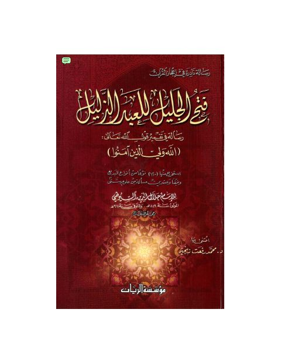

Downloads need an internet connection.
فتح الجليل للعبد الذليل رسالة في تفسير قول الله تعالى {اللَّهُ وَلِيُّ الَّذِينَ آمَنُوا} تحقيق
Authors: جلال الدين عبد الرحمن السيوطي
Editors: محمد رفعت زنجير
Publishers: مؤسسة الريان
**▫️ العنوان: فتح الجليل للعبد الذليل رسالة في تفسير قول الله تعالى {اللَّهُ وَلِيُّ الَّذِينَ آمَنُوا} تحقيق** ▪️ المؤلف: #جلال_الدين_عبد_الرحمن_السيوطي ▫️ المحقق: #محمد_رفعت_زنجير ▪️ الناشر: #مؤسسة_الريان ▫️ تاريخ النشر: 1423م 2002هـ ▪️ بلد النشر: بيروت، #لبنان ▫️ الطبعة: 1 ▪️ عدد الأجزاء: 1 ▫️ الصفحات: 68 ▪️ نوع الوعاء: #كتاب ▫️ التصنيف الرئيسي: #التفسير_وعلوم_القرآن ▪️ التصنيف الفرعي: #بلاغة_القرآن ۪